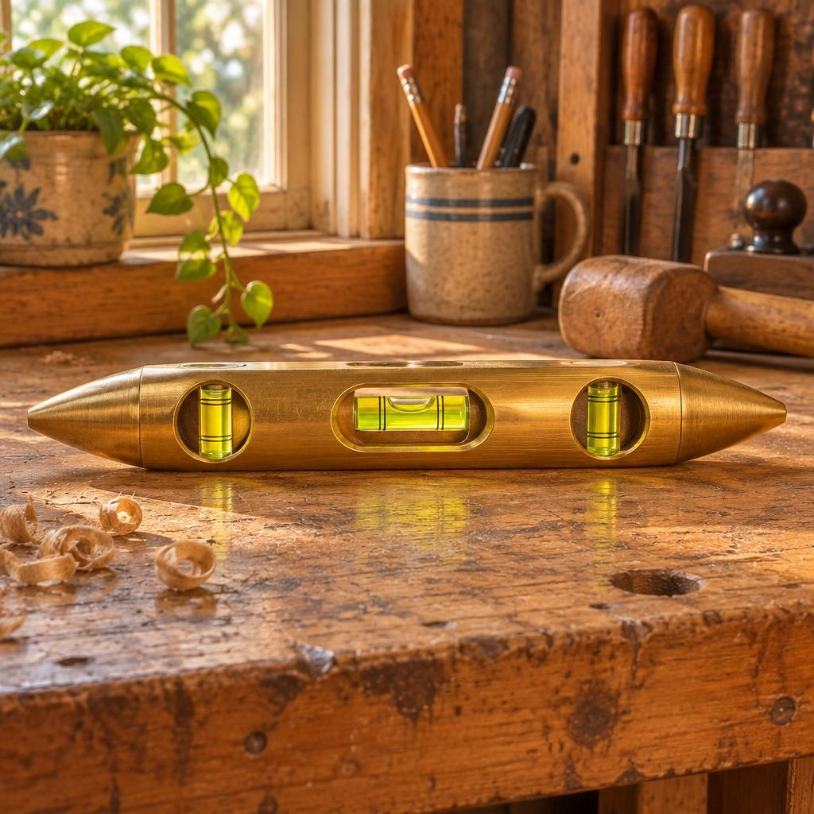

Brass Spirit Torpedo Level
The Garage Room • Catalog No. G-06

Brass Spirit Torpedo Level. Acquired 1962. Its metal body carries the quiet weight of workshop service. Worn surfaces record patient hands.
Curator's Note • Fun Fact
A bubble indicates level.
AI-generated illustration. Acquired refers to the digital collection. Source: Original Tiny Museum fictional collection; historical acquisition dates are fictional.